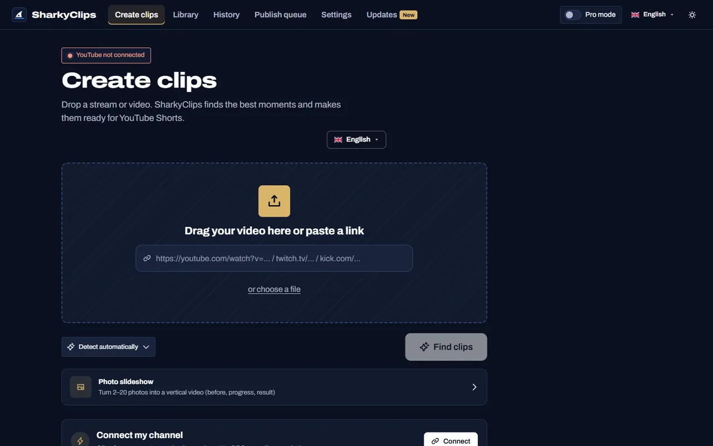

Kostenlose App für Streamer
Dein Stream rein, fertige Clips raus.
SharkyClips findet die besten Momente in deiner Stream-Aufnahme und macht daraus vertikale Clips für YouTube Shorts, TikTok und Instagram Reels. Alles läuft auf deinem eigenen PC.
- Kostenlos und Open Source
- Kein Konto, keine Cloud
- 11 Sprachen
- Windows 10 / 11

So funktioniert es
Drei Schritte. Den Schnitt dazwischen macht SharkyClips.
Stream hinzufügen
Zieh eine Videodatei hinein oder füge einen Twitch-, YouTube- oder Kick-Link ein. SharkyClips kann auch die neueste Aufnahme aus deinem OBS-Ordner nehmen.
SharkyClips macht die Clips
Es findet die lauten, lustigen und spannenden Momente, schneidet sie sauber, fügt Untertitel hinzu, piept Schimpfwörter aus und schreibt die Titel.
Prüfen und teilen
Schau dir die Clips an, ändere, was du willst, und teile sie auf YouTube Shorts, TikTok und Instagram Reels.
In Aktion sehen
Eine kurze Tour durch die aktuelle Version, gemacht mit einem Demo-Stream (keine echte Person, kein echtes Spiel).



Gemacht für Streamer
Findet die Momente
Laute Reaktionen, Lachen, Chat-Explosionen und Spielereignisse werden zu einer sortierten Clip-Liste.
Ausgepiept, geprüft
Schimpfwörter werden in 11 Sprachen ausgepiept, und jeder fertige Clip wird noch einmal angehört.
Ein Teilen-Knopf
YouTube Shorts, TikTok und Instagram Reels, mit dem richtigen Text und den Grenzen jeder Plattform.
TikTok-HelferNeu
Eine kleine Browser-Erweiterung füllt deinen TikTok-Upload aus. Du prüfst ihn und klickst selbst auf Posten.
Foto-DiashowNeu
Mach aus 2 bis 20 Fotos ein vertikales Vorher-nachher-Video mit Beschriftungen und Musik.
Dein LookNeu
Vier Looks für die App, dunkel und hell, und deine eigenen Farben.
Wie SharkyClips YouTube nutzt
Der Upload zu YouTube ist freiwillig. Wenn du deinen Kanal unter Einstellungen → YouTube verbindest, nutzt SharkyClips die offiziellen YouTube-API-Dienste genau für diese Dinge, und nur, wenn du es willst:
| Aktion | Berechtigung (Scope) | Wann |
|---|---|---|
| Einen Clip hochladen, den du vorbereitet hast (Titel, Beschreibung, Tags, Sichtbarkeit, Veröffentlichungszeit, Playlist, Thumbnail); seine Angaben oder Zeit ändern, ihn früher veröffentlichen oder löschen, wenn du ihn vor der Veröffentlichung abbrichst; anzeigen, welcher Kanal verbunden ist; Aufrufe, Likes und Sichtbarkeit der Videos lesen, die mit SharkyClips hochgeladen wurden | youtube | Wenn du Jetzt veröffentlichen drückst oder einen Clip planst (vorab hochgeladen, solange dein PC an ist), ihn in der Bibliothek änderst oder abbrichst, die Einstellungen öffnest, und etwa alle 6 Stunden, während die App läuft |
| Den durchschnittlichen Wiedergabeanteil derselben Videos lesen, um zu lernen, welcher Einstieg (Hook) deine Zuschauer hält | yt-analytics.readonly | Nur für Clips, die als Teil eines Hook-Tests hochgeladen wurden und seit 48 Stunden öffentlich sind |
Diese Daten werden nur auf deinem Computer gespeichert und nur genutzt, um dir deine Ergebnisse zu zeigen und die Clip-Bewertungen für deinen Kanal zu verbessern. SharkyClips hat keinen Server: Die Entwickler erhalten, sehen oder teilen deine YouTube-Daten nie, und nichts wird für Werbung genutzt. SharkyClips liest nie Kanäle anderer Leute, deine Kommentare, deine Abonnenten oder deinen Verlauf. Es ändert oder löscht nur Videos, die mit SharkyClips hochgeladen wurden, und nur, wenn du es willst (zum Beispiel, wenn du einen geplanten Clip änderst oder abbrichst).
Du kannst die Verbindung jederzeit unter Einstellungen → YouTube trennen (damit wird das Zugriffstoken bei Google widerrufen) oder den Zugriff in deinen Google-Kontoberechtigungen entfernen. Mit dem Verbinden stimmst du den YouTube-Nutzungsbedingungen zu; Google verarbeitet deine Daten nach der Google-Datenschutzerklärung. Lies unsere vollständige Datenschutzerklärung und die Nutzungsbedingungen.
Kostenlos, offen, privat
SharkyClips steht unter der MIT-Lizenz: kein Abo, keine Credits, kein Wasserzeichen. Es gibt kein Konto und kein Tracking, und deine Videos bleiben auf deinem PC, außer du teilst sie. Der Quellcode und jede Version sind auf GitHub.